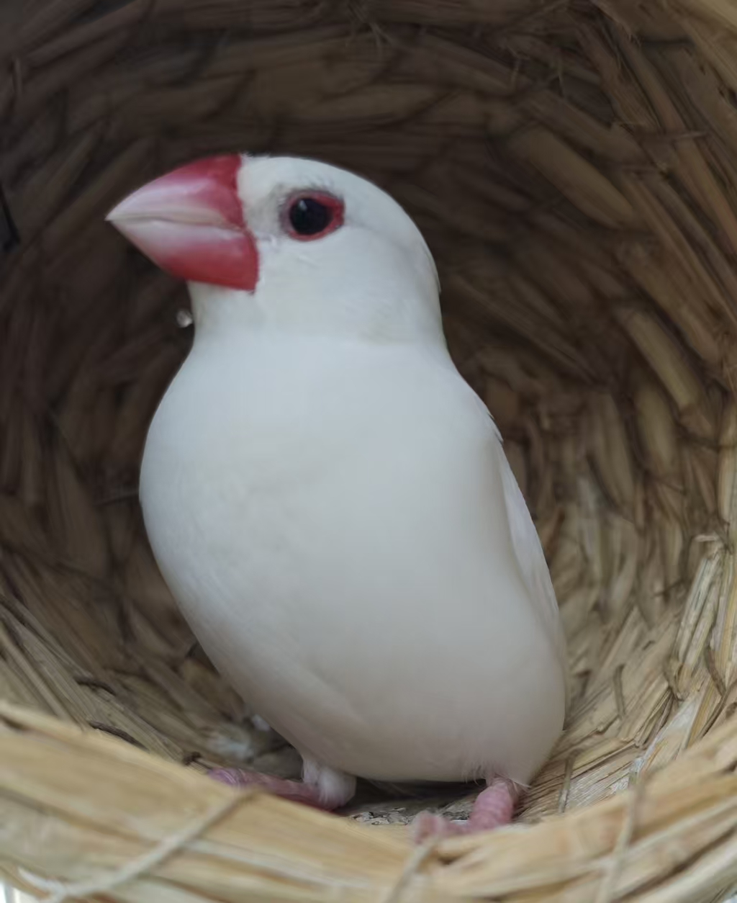

|
I am an undergraduate student in Computer Science and Technology at Tongji University, expecting to graduate in June 2027. My research interests lie at the intersection of 3D Perception, Embodied AI, and Generative World Models.
I am currently working as a Research Assistant at Peking University (VDIG Group), focusing on multimodal perception for robotics. I am highly motivated to pursue a Master's degree in Computer Science to further broaden my technical foundations and explore scalable AI solutions.
Email /
Github /
Google Scholar
|
|
News
- [Feb 2026] Actively seeking Summer 2026 Research Internship opportunities in 3D Vision and Embodied AI! [Available: July - Sept 2026]
- [Feb 2026] Our paper "R4Det: 4D Radar-Camera Fusion..." was accepted to CVPR 2026!
|
Publications & Research Experience
|
|
|
R4Det: 4D Radar-Camera Fusion for High-Performance 3D Object Detection
Yousen Tang*, et al. (*Co-First Author)
CVPR, 2026
arXiv
Proposed a radar-camera fusion framework addressing the inherent sparsity of 4D radar and geometric contamination. Achieved SOTA results, outperforming baselines by significant margins on TJ4DRadSet and VoD datasets.
|
|
|
3DVLA: Enhancing Vision-Language-Action Models with 3D Understanding
Research Assistant, Peking University (VDIG Group)
Feb 2026 - Present
Proposed 3DVLA, a plug-and-play framework that injects robust 3D scene understanding into pre-trained 2D VLA models without disrupting their language priors. Designed a coordinate-driven self-supervised predictor and uncertainty-guided routing to synthesize occluded geometries, achieving SOTA manipulation performance on LIBERO-Plus and RoboTwin 2.0 benchmarks.
|
|
|
Conversational Data Analysis System (Data Insight Agent)
R&D Intern, ZhongAn Information Technology
Jul 2025 - Sep 2025
Engineered an LLM-driven agentic workflow for automated data querying. Optimized model routing, improving intent classification accuracy by 3.8% while reducing inference overhead. Recognized with "Outstanding Individual" award.
|
|
|
Multi-Agent Path Planning (MAPF) in Dynamic Environments
SITP Project Lead, Tongji University
Dec 2023 - Jan 2025
Implemented A* for single-agent and Conflict-Based Search (CBS) for multi-agent coordination. Applied simulation algorithms based on PIBT for efficient AGV planning.
|
Tongji University, Shanghai, China
B.E. in Computer Science and Technology
Sep 2023 - Jun 2027 (Expected)
|
|

|
Baibai
Baibai is my pet bird and an important companion in my daily life.
Outside of research, I enjoy spending time with Baibai — a small reminder to slow down and appreciate simple moments.
|
© 2026 Yousen Tang
|
{kind=link}